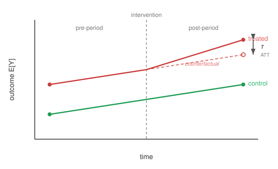
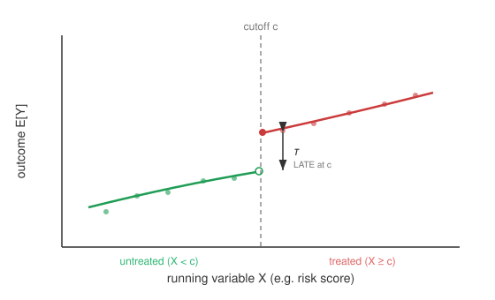
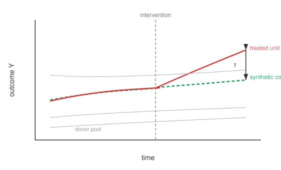

Quasi-Experimental Designs#
Exploiting natural experiments and institutional variation.
When adjustment for measured covariates is insufficient, quasi-experimental designs recover causal effects by exploiting structural features of how treatment is assigned - over time, around a threshold, or relative to a comparison unit. These designs are especially relevant for longitudinal data. They form the empirical core of modern applied econometrics; the introductory textbooks of Angrist & Pischke (2009), Angrist & Pischke (2015) and Cunningham (2021), together with the more statistical treatment of Imbens & Rubin (2015), give book-length introductions to the methods below.
Difference-in-Differences#
Difference-in-differences (DiD) compares the change in outcomes over time between a treated and a control group. Under the parallel trends assumption - that, absent treatment, both groups would have evolved in parallel - the post-period gap beyond the projected control trend identifies the average treatment effect on the treated (ATT). The design dates back to Ashenfelter & Card (1985), and Card & Krueger (1994) is its best-known application - the New Jersey minimum-wage study. Sant’Anna & Zhao (2020) give a doubly robust DiD estimator, and Callaway & Sant’Anna (2021) extend the design to multiple periods and staggered treatment timing with their group-time ATT estimator. Goodman-Bacon (2021) is not a new estimator but a decomposition result: under staggered timing the canonical two-way fixed-effects (TWFE) OLS regression - the default DiD implementation in most software - equals a weighted average of all possible \(2 \times 2\) DiDs, and some of those weights turn negative when treatment effects are heterogeneous across cohorts or over time, so the TWFE estimate can be attenuated or even sign-reversed even when parallel trends holds. This diagnostic motivates the heterogeneity-robust estimators in Heterogeneous Treatment Effects.
{kind=link}

Fig. 16 Difference-in-differences. Under parallel trends, the treated group’s counterfactual (dashed) would have followed the control trend; the vertical gap \(\tau\) in the post-period is the ATT.#
Algorithm 15 (Difference-in-Differences (2x2))
Inputs Outcomes \(Y\) for treated/control groups, pre/post periods; optional covariates \(X\)
Outputs Estimated ATT \(\hat{\tau}\)
Compute the treated change: \(\Delta_{\text{treated}} = \bar{Y}^{\text{post}}_{\text{treated}} - \bar{Y}^{\text{pre}}_{\text{treated}}\)
Compute the control change: \(\Delta_{\text{control}} = \bar{Y}^{\text{post}}_{\text{control}} - \bar{Y}^{\text{pre}}_{\text{control}}\)
Difference the differences: \(\hat{\tau} = \Delta_{\text{treated}} - \Delta_{\text{control}}\) (removes time-invariant confounding)
(Optional) For covariate-conditional parallel trends, use a doubly robust estimator combining outcome-change regression and a propensity model
Return estimated ATT \(\hat{\tau}\)
Regression Discontinuity#
Regression discontinuity (RD) applies when treatment is assigned by a threshold rule on a continuous running variable \(X\) (e.g. a risk score). The design was first proposed by Thistlethwaite & Campbell (1960); its modern econometric foundations are due to Hahn, Todd & van der Klaauw (2001). Units just below and just above the cutoff \(c\) are comparable, so the jump in the outcome at \(c\) identifies the average treatment effect at the cutoff, \(\mathbb{E}[Y(1) - Y(0) \mid X = c]\) - the causal effect at the discontinuity point (Hahn, Todd & van der Klaauw, 2001; Imbens & Lemieux, 2008). This is a different object from the local average treatment effect (LATE) of the IV/2SLS design (Instrumental Variables). The LATE, formally defined as
is the average treatment effect among compliers - units whose treatment status is switched by the instrument - and is the estimand identified by instrumental variables under heterogeneous treatment effects (Imbens & Angrist, 1994). In a sharp RD every unit switches deterministically from \(T=0\) to \(T=1\) at \(c\), so the estimand conditions on the covariate value \(X = c\), not on an unobserved compliance type. Imbens & Lemieux (2008) provide a practical guide to estimation and bandwidth selection.
{kind=link}

Fig. 17 Regression discontinuity. Treatment switches on at the cutoff \(c\); the vertical jump \(\tau\) in the fitted outcome at \(c\) identifies the average treatment effect at the cutoff, \(\mathbb{E}[Y(1) - Y(0) \mid X = c]\).#
Algorithm 16 (Regression Discontinuity)
Inputs Running variable \(X\), outcome \(Y\), cutoff \(c\), bandwidth \(h\)
Outputs Estimated average treatment effect at the cutoff \(\hat{\tau}\)
Restrict to observations within the bandwidth, \(|X - c| \le h\)
Fit a local regression just below the cutoff: \(\hat{\mu}_-(c) = \lim_{x \uparrow c} \mathbb{E}[Y \mid X = x]\)
Fit a local regression just above the cutoff: \(\hat{\mu}_+(c) = \lim_{x \downarrow c} \mathbb{E}[Y \mid X = x]\)
Estimate the discontinuity: \(\hat{\tau} = \hat{\mu}_+(c) - \hat{\mu}_-(c)\)
Return the estimated effect at the cutoff \(\hat{\tau}\)
Synthetic Control#
When only a single (or a few) treated unit is observed over time, the synthetic control method - introduced by Abadie & Gardeazabal (2003) and formalized by Abadie, Diamond & Hainmueller (2010) - constructs a counterfactual as a weighted combination of untreated donor units chosen to match the treated unit’s pre-intervention trajectory. The post-intervention gap between the treated unit and its synthetic counterpart estimates the effect.
{kind=link}

Fig. 18 Synthetic control. Donor-pool units are weighted so the synthetic control (dashed) tracks the treated unit before intervention; the post-intervention gap \(\tau\) is the estimated effect.#
Algorithm 17 (Synthetic Control)
Inputs Treated unit, donor pool of \(J\) untreated units, pre-intervention outcomes and predictors
Outputs Estimated effect \(\hat{\tau}_t\) for post-intervention periods
Choose non-negative weights \(w_1, \ldots, w_J\) (summing to one) minimizing the pre-intervention distance between the treated unit and the weighted donor pool
Construct the synthetic control outcome \(\hat{Y}^{\text{synth}}_t = \sum_{j=1}^{J} w_j\, Y^{(j)}_t\) for each period \(t\)
For each post-intervention period, estimate the effect \(\hat{\tau}_t = Y^{\text{treated}}_t - \hat{Y}^{\text{synth}}_t\)
Return the estimated effect \(\hat{\tau}_t\)